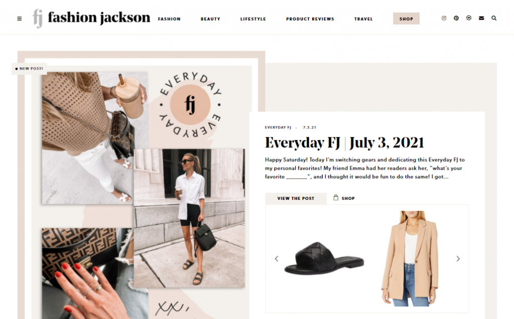

He Spoke Style is the leading online destination for premium original men's style content.
Topic : men's fashion
created on: word press
It was created by Brian Sacawa and now it was run by a team of editors,He said style is a website focusing on
men's fashion and providing a mix of inspiration and information on men's wear.
The Zoe Report is a digital media property delivering fashion, beauty and lifestyle content.
Topic : women's fasion , beauty and wellness
Created On : Wordpress
Created by an American fashion designer and stylist Rachel Zoe, The Zoe Report's
articles cover fashion trends, style guides, makeup, home decor, and even celebrity fashion and lifestyle
Founded as a creative outlet by beauty and fashion blogger Julie Sariñana , Sincerely Jules is a blog that provides
outfit ideas, beauty tips, and reviews of her favorite products.
The blog provides diverse fashion content, including articles on fashion ideas for various occasions,
such as going on vacation, to the beach, jogging, or staying home.
Fashion Jackson

Fashion Jackson
Welcome to Minimalist Sophistication with Maximum Style
Topic : women's fashion, beauty, lifestyle
Created On : WordPress
Through Fashion Jackson, a fashion blogger Amy Jacksonblogger advocates for a minimalist approach to fashi
on through reimagined classics.
Blog readers enjoy daily outfit ideas, makeup hauls, fashion product reviews, and suggestions of what
to pack when traveling to various destinations.